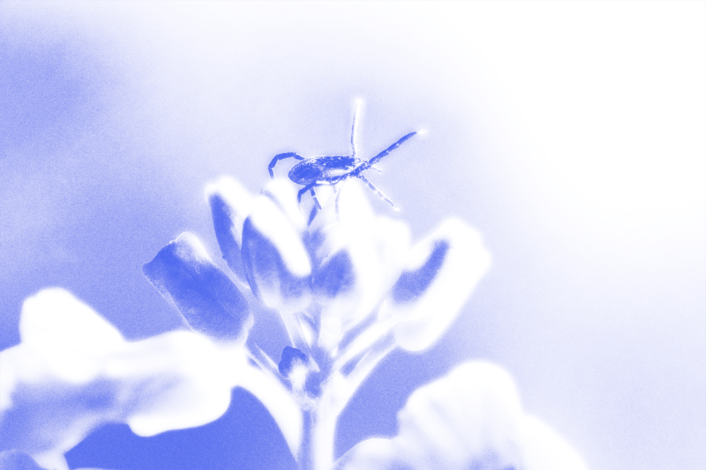

Клещи против комаров
30.03.2023 11:10
В путешествии
С юморком
Короткое



Клещи являются опасными, потому что они могут переносить инфекционные заболевания на человека. Они являются векторами многих болезней, таких как боррелиоз, клещевой энцефалит, анаплазмоз, эрлихиоз и др.
Что опасного в клещах?

Не терплю людей — в обличии клещей!

Не дайте укусить
1. Избегайте мест, где могут находиться клещи, особенно в период с марта по ноябрь, когда активна их жизнедеятельность. Все просто.
2. Если решили поехать на природу, носите защитную одежду, чтобы уменьшить вероятность присасывания клещей. Это могут быть длинные брюки, рубашки с длинными рукавами. Используйте репелленты от насекомых на коже и одежде.
3. Проверяйтесь на наличие клещей после поездки в лес или парк. Клещи могут присасываться на любой части тела, поэтому нужно проверить все участки кожи. Даже попу.
4. Если вы заметили клеща, удалите его как можно быстрее, используя специальные инструменты для удаления клещей или обратитесь к медицинскому работнику. Старайтесь не трогать клеща голыми руками, чтобы не передавать возбудителей болезней на кожу.
Клещ и комар
-Куда ты летишь, комар? — спросил клещ.
-Да вот к оленю, кровососать, — ответил комар.
-О, а я в лес за белками, — сказал клещ. — А что, мы не соревнуемся, кто опаснее?
-А зачем нам это? — удивился комар.
-А вдруг кто-то нас спросит, — ответил клещ.
Комар задумался и сказал:
-Ты знаешь, я думаю, что нам лучше объединиться и стать еще опаснее, чем по отдельности.
-Правильно, — согласился клещ. — Давай станем лучшими друзьями и будем кровососить вместе!
Так они и объединили свои усилия, стали незаменимыми вредителями и с тех пор бороздили просторы земли, жалко, конечно, людей и животных.
Вам также пригодится:

Земля уходит из-под ног

10 самых badass змей

А у нас в квартире газ!

Слишком много воды